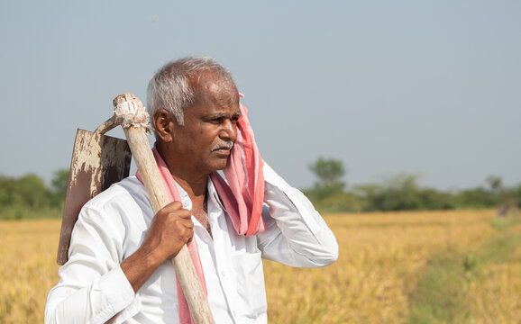

🌿 "Agriculture is the most healthful, most useful, and most noble employment of man." 🌾
Connecting Farmers, Knowledge, and Sustainability
Traditional Methods of Agriculture
Traditional agriculture practices rely on natural techniques to enhance soil fertility and productivity. Methods such as crop rotation, intercropping, and mulching help maintain soil health and prevent erosion. Composting and green manuring enrich the land with organic matter, reducing the need for chemical fertilizers. Terracing in hilly regions prevents water runoff, while rainwater harvesting ensures efficient irrigation. These eco-friendly techniques promote biodiversity, sustainability, and food security, making them essential for long-term agricultural success while preserving the environment.

Learn More
Stress Relief Activities for Farmers
Stress relief is essential for farmers to maintain their mental and physical well-being. Engaging in yoga, meditation, and deep breathing exercises helps reduce anxiety and improve focus. Community gatherings, music therapy, and storytelling provide social support and relaxation. Spending time in nature walks and gardening promotes peace of mind. Ensuring a balanced diet, proper sleep, and short breaks during work prevents burnout. These activities help farmers stay motivated, manage stress effectively, and maintain a healthier, more fulfilling farming lifestyle.

Learn More
Weather Conditions and Crops
Weather conditions play a crucial role in farming, directly affecting crop growth and yields. Factors like temperature, rainfall, humidity, and wind speed determine the success of different crops. Droughts can cause water shortages, while excessive rainfall may lead to soil erosion and crop diseases. Frost and heatwaves can damage plants at critical growth stages. Understanding seasonal weather patterns helps farmers plan irrigation, planting schedules, and pest control strategies, ensuring better productivity. Modern tools like weather forecasts, satellite imaging, and climate-smart farming techniques assist in mitigating risks and improving overall agricultural sustainability.
Learn More